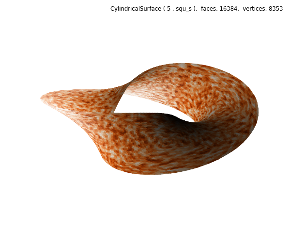

Surface Texture¶
Surface textures may be generated using random color or geometry variations. These effects can be accentuated using shading and highlighting.
Geometry¶
This first example combines several operations to control the final surface visualization.
- randomly generated texture is applied.
- geometric functional operations are applied twice, in sequence.
- surface shading and highlighting are both applied.
- shading and highlighting are applied from two separate illumination directions.
A random generator was used to slightly change the coordinates of the unit radius cylinder. The twist function is similar to those in previous examples; however for this case, the radial coordinate is used in the highlighted line instead of unity. Shading was then applied using the direction = (1,1,1). Because the hilite direction is changed from default, the surface appears illuminated from two light sources. Texture enhances the effect.
For this example using a uniform surface color, the number of twists is required to be even (2). The reason being that shading is used to visualize the geometry. In previous Cylindrical Coordinates examples, for an odd number of twists, a mirrored cmap was needed so that the two ends at 0 and 2π appear joined. Only when the twists are even are the surface normals continuous, which shading is based on.
import numpy as np
from matplotlib import pyplot as plt
import s3dlib.surface as s3d
#.. Surface Texture
# 1. Define functions to examine ....................................
def randfunc(rtz) :
r,t,z = rtz
sigma = 0.005
R = r + sigma*np.random.rand( len(r) )
return R,t,z
def twistFunction(rtz,twists) :
r,t,z = rtz
thickness = 0.5
w = thickness*z
phi = 0.5*t*twists
R = r + w * np.cos(phi)
Z = w * np.sin(phi)
return R,t,Z
# 2. Setup and map surfaces .........................................
twist = s3d.CylindricalSurface(5, basetype='squ_s', color='orange')
twist.map_geom_from_op(randfunc)
twist.map_geom_from_op( lambda rtz : twistFunction(rtz,2) )
twist.shade(direction=[1,1,1]).hilite(direction=[0,1,1])
# 3. Construct figure, add surfaces, and plot ......................
fig = plt.figure(figsize=plt.figaspect(0.8))
info = str(twist)
fig.text(0.975,0.975,info, ha='right', va='top', fontsize='smaller', multialignment='right')
ax = fig.add_subplot(111, projection='3d')
ax.set(xlim=(-1,1), ylim=(-1,1), zlim=(-1,1) )
ax.set_axis_off()
ax.add_collection3d(twist)
fig.tight_layout()
plt.show()
Color Mapping¶
For this example, the random function, randfunc, is used to randomly select a color from the Oranges Matplotlib colormap.
The magnitude of the sigma parameter in the random function has no effect since the colormap is normalized. Each face color is randomly chosen and the resolution of the color fluctuations are only dependent on the resolution set in the surface object. The only change from the previous script is higlighted.
# 2. Setup and map surfaces .........................................
twist = s3d.CylindricalSurface(5, basetype='squ_s')
twist.map_cmap_from_op( lambda rtz : randfunc(rtz)[0], 'Oranges' )
twist.map_geom_from_op( lambda rtz : twistFunction(rtz,2) )
twist.shade(direction=[1,1,1]).hilite(direction=[0,1,1])
Combined Effects¶
In this example, the colormaping is based on the radial position of the randomized surface.
As in the first example, the initial surface is slightly changed by randomizing the position of the radial coordinate. This coordinate is then color mapped following the randomization. Note that the color mapping function now uses the radial coordinate instead of the random function, as was the case in the last example.
Since the colormapping uses the face coordinates which are computed from the three randomized vertex coordinates, the effect is to smooth out the colorized texture.
# 2. Setup and map surfaces .........................................
twist = s3d.CylindricalSurface(5, basetype='squ_s')
twist.map_geom_from_op(randfunc)
twist.map_cmap_from_op( lambda rtz : rtz[0], 'Oranges' )
twist.map_geom_from_op( lambda rtz : twistFunction(rtz,2) )
twist.shade().hilite(direction=[0,1,1])